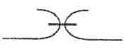
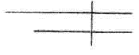
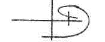
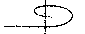
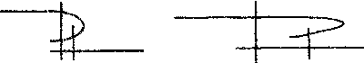
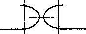

Тест по темі «Виконання машинних робіт»
З приведених нижче тестових завдань вибрати один правильний варіант відповіді
- 1. Визначите по схемі обкантовувальний шов:
- 
- 
- 
- 2. Визначте по схемі шов в підгин з закритим зрізом:
- 
- 3. Визначення кількості стібків в 1 або 5 см строчки, це:
- частота стібка;
- ширина шва;
- довжина стібка.
- 4. З'єднання двох деталей по овальному контуру визначають, як процес:
- обметування;
- виметування;
- вметування.
- 5. З'єднання двох деталей по краю деталі, з подальшим їх вивертанням, визначають, як процес:
- зшивання;
- обшивання;
- настрочування.
- 6. Визначте по схемі накладні шви:
- 7. Для видалення ниток тимчасового скріплення деталей необхідно строчку зметування розрізати ножицями через кожних:
- 10-15 см;
- 1-3 см;
- 0,5-5,0см.
- 8 Визначите по схемі настрочні шви:
- 
- 9. Технічні умови виконання операції при з'єднанні двох деталей (одна з прямим зрізом, інша з косим зрізом):
- деталь з косим зрізом кладуть знизу на двигун тканини, а деталь з прямим зрізом - зверху;
- деталь з прямим зрізом - знизу на двигун тканини, а деталь з косим зрізом кладуть - зверху;
- не має значення.
- 10. Визначите по схемі розстрочний шов:
- 
- 11. Визначте технічні умови на довжину машинної закріпки:
- 1,5-2,0 см;
- 1,0-1,5 см;
- 0,7-1,0 см.